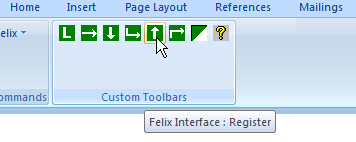
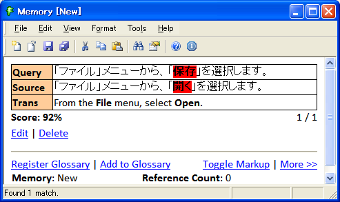
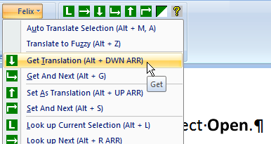
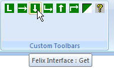
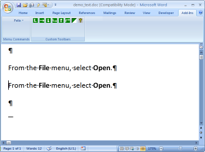

Felix Manual
Quick Start Tutorial (MS Word)
This brief tutorial will help you get up and running with Felix for translating documents in Microsoft® Word.
-
Open the document you want to translate in Word.

-
From the Felix menu, select "Look up Next", or click the right
arrow button on the Felix toolbar.

Menu selection
Toolbar button
This will select the first sentence, and look it up in Felix. Since you won't already have a translation memory loaded, it should show that you have no matches.

Selected in Word
Shown in Felix window
-
Translate the sentence, overwriting the original.
After you translate it, put the cursor at the end of the sentence, and from the Felix menu, select "Set as Translation" or click the up arrow button on the Felix toolbar.

Menu selection
Toolbar button
This will register the translation for the current sentence ("query") in the Felix window.

Selected in Word
Shown in Felix window
- Again select "Look up Next" or click the right arrow to repeat this process.
-
If you look up a sentence that's already in your memory (or similar to one),
the matching source and translation will appear in the Felix menu.

Shown in Felix window
To retrieve that translation, with the sentence selected in Word, go to the Felix menu and select "Get Translation" or click the down arrow on the Felix toolbar.

Menu selection
Toolbar button
The translation will be added to your document, overwriting the selected source segment.

Selected in Word
If the match was a "fuzzy" (non-perfect) match as shown above, or if you need to make changes for context, make your changes and then register the new translation using the procedure in step 3, above.

Shown in Felix window
- Carry on translating the next sentence.